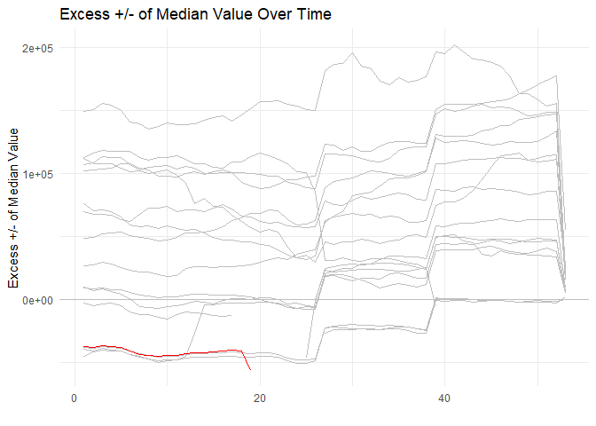
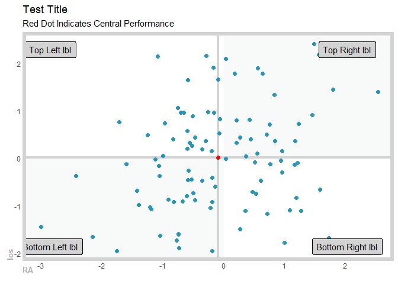

Overview
To view the full wiki, click here: Full healthyR Wiki
healthyR is a comprehensive R package designed to streamline hospital data analysis workflows. It provides a consistent, intuitive framework for analyzing common administrative and clinical data problems, helping healthcare analysts and data scientists quickly generate insights from hospital data.
Key Features
- 📊 Time Series Analysis: Advanced tools for analyzing hospital census, length of stay (LOS), readmission rates, and other temporal metrics
- 📈 Visualization: Ready-to-use plotting functions for common healthcare analytics use cases
- 🏥 Service Line Grouping: Automated patient classification into service lines based on ICD-10 codes and DRG
- 📉 Performance Metrics: Calculate and visualize key hospital performance indicators including ALOS (Average Length of Stay), readmission rates, and LOS/Readmit indices
- 🎨 Accessible Design: Color-blind friendly palettes and themes for inclusive data visualization
- 🔧 Utility Functions: Helper functions for data manipulation, Excel export, and SQL-style string operations
What Problems Does healthyR Solve?
healthyR takes the guesswork out of common hospital data analysis tasks:
- Calculate average length of stay across different time periods and patient populations
- Analyze readmission rates and identify trends
- Create service line classifications from diagnosis and procedure codes
- Generate publication-ready visualizations of hospital metrics
- Perform census and capacity planning analyses
- Identify outliers and excess utilization patterns
Installation
You can install the released version of healthyR from CRAN with:
install.packages("healthyR")And the development version from GitHub with:
# install.packages("devtools")
devtools::install_github("spsanderson/healthyR")Quick Start
library(healthyR)
library(dplyr)
library(timetk)
# Load your hospital data
# Analyze time series patterns with time signatures
data_with_time_features <- ts_signature_tbl(
.data = your_data,
.date_col = admission_date
)
# Visualize average length of stay trends
ts_alos_plt(
.data = your_data,
.date_col = discharge_date,
.value_col = length_of_stay,
.by_grouping = "month"
)
# Create service line classifications
data_with_service_line <- your_data %>%
mutate(
service_line = service_line_vec(
.data = .,
.dx_col = principal_dx,
.px_col = principal_px,
.drg_col = drg_number
)
)Core Functionality
Time Series Analysis
healthyR provides powerful tools for temporal analysis of hospital data.
Time Signature Features
Add time-based features to your data for advanced analysis:
library(healthyR)
library(timetk)
ts_signature_tbl(.data = m4_daily, .date_col = date)
#> # A tibble: 17,578 × 31
#> id date value index.num diff year year.iso half quarter month
#> <fct> <date> <dbl> <dbl> <dbl> <int> <int> <int> <int> <int>
#> 1 D410 1978-06-23 9109. 267408000 NA 1978 1978 1 2 6
#> 2 D410 1978-06-24 9103. 267494400 86400 1978 1978 1 2 6
#> 3 D410 1978-06-25 9116. 267580800 86400 1978 1978 1 2 6
#> 4 D410 1978-06-26 9116. 267667200 86400 1978 1978 1 2 6
#> 5 D410 1978-06-27 9106. 267753600 86400 1978 1978 1 2 6
#> 6 D410 1978-06-28 9094. 267840000 86400 1978 1978 1 2 6
#> 7 D410 1978-06-29 9094. 267926400 86400 1978 1978 1 2 6
#> 8 D410 1978-06-30 9084. 268012800 86400 1978 1978 1 2 6
#> 9 D410 1978-07-01 9081. 268099200 86400 1978 1978 2 3 7
#> 10 D410 1978-07-02 9047. 268185600 86400 1978 1978 2 3 7
#> # ℹ 17,568 more rows
#> # ℹ 21 more variables: month.xts <int>, month.lbl <ord>, day <int>, hour <int>,
#> # minute <int>, second <int>, hour12 <int>, am.pm <int>, wday <int>,
#> # wday.xts <int>, wday.lbl <ord>, mday <int>, qday <int>, yday <int>,
#> # mweek <int>, week <int>, week.iso <int>, week2 <int>, week3 <int>,
#> # week4 <int>, mday7 <int>Median Excess Visualization
Identify patterns and outliers in time series data:
library(healthyR)
library(timetk)
library(dplyr)
ts_signature_tbl(.data = m4_daily, .date_col = date, .pad_time = TRUE, id) %>%
ts_median_excess_plt(
.date_col = date
, .value_col = value
, .x_axis = week
, .ggplot_group_var = year
, .years_back = 5
)
Visualization Tools
Gartner Magic Chart
Create quadrant charts for performance analysis (e.g., comparing length of stay vs readmission risk):
suppressPackageStartupMessages(library(healthyR))
suppressPackageStartupMessages(library(tibble))
suppressPackageStartupMessages(library(dplyr))
gartner_magic_chart_plt(
.data = tibble(x = rnorm(100, 0, 1), y = rnorm(100, 0, 1))
, .x_col = x
, .y_col = y
, .y_lab = "los"
, .x_lab = "RA"
, .plot_title = "Test Title"
, .top_left_label = "Top Left lbl"
, .top_right_label = "Top Right lbl"
, .bottom_left_label = "Bottom Left lbl"
, .bottom_right_label = "Bottom Right lbl"
)
Service Line Analysis
Automatically classify patients into service lines based on clinical codes:
# Example: Classify patients by service line
df <- data.frame(
dx_col = "F10.10", # ICD-10 diagnosis code
px_col = NA, # Procedure code (if applicable)
drg_col = "896" # DRG number
)
service_line_vec(
.data = df,
.dx_col = dx_col,
.px_col = px_col,
.drg_col = drg_col
)Function Categories
📊 Time Series & Plotting Functions
-
ts_signature_tbl()- Add time-based features to your data -
ts_alos_plt()- Plot average length of stay over time -
ts_readmit_rate_plt()- Visualize readmission rates -
ts_median_excess_plt()- Identify excess utilization patterns -
ts_census_los_daily_tbl()- Calculate daily census and LOS metrics -
ts_plt()- General time series plotting
📈 Performance Metrics
-
los_ra_index_summary_tbl()- Calculate LOS and readmission indices -
los_ra_index_plt()- Visualize performance indices -
gartner_magic_chart_plt()- Create quadrant performance charts -
diverging_bar_plt()- Show positive/negative deviations -
diverging_lollipop_plt()- Lollipop charts for variance analysis
🏥 Data Transformation Functions
-
service_line_vec()- Classify patients into service lines -
service_line_augment()- Add service line column to your data -
category_counts_tbl()- Get frequency counts by category -
top_n_tbl()- Extract top N records by criteria -
named_item_list()- Create named lists for Excel export
🎨 Accessibility Features
-
color_blind()- Color-blind friendly palette -
hr_scale_fill_colorblind()- ggplot2 fill scale for accessibility -
hr_scale_color_colorblind()- ggplot2 color scale for accessibility
🔧 Utility Functions
-
save_to_excel()- Export data to Excel with timestamp -
opt_bin()- Calculate optimal bin size for histograms -
sql_left(),sql_right(),sql_mid()- SQL-style string operations
Documentation
- 📚 Function Reference - Complete documentation of all functions
- 🚀 Getting Started Vignette - Detailed introduction and tutorials
- 📰 News & Changelog - Latest updates and changes
Data Included
healthyR includes reference datasets for service line classification:
-
dx_cc_mapping- ICD-10 diagnosis code mappings for condition categories -
px_cc_mapping- ICD-10 procedure code mappings for procedure categories
Contributing
We welcome contributions! Please see our Contributing Guidelines for details on:
- Reporting bugs
- Suggesting new features
- Submitting pull requests
- Code of conduct
Getting Help
If you encounter issues or have questions:
- Check the function documentation
- Review the Getting Started vignette
- Search existing issues
- Open a new issue with a reproducible example
Author
Steven P. Sanderson II, MPH - Website: https://www.spsanderson.com - GitHub: @spsanderson - ORCID: 0009-0006-7661-8247